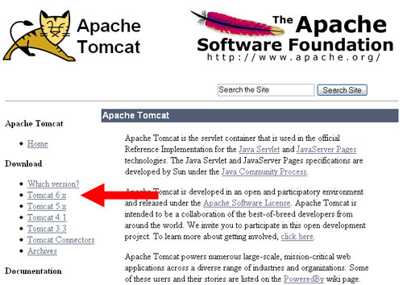
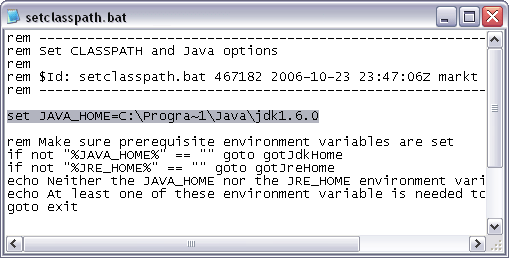
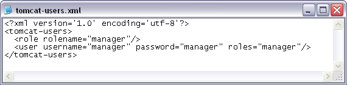
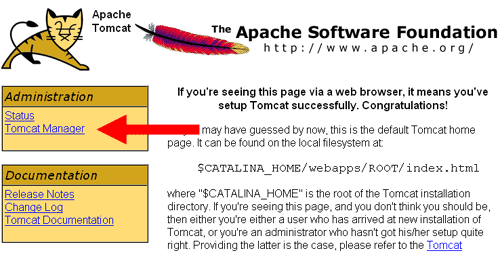
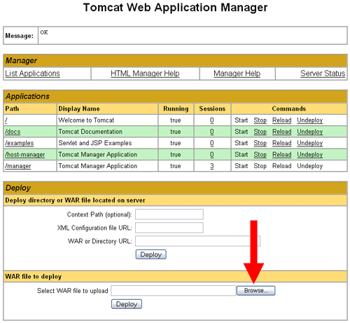
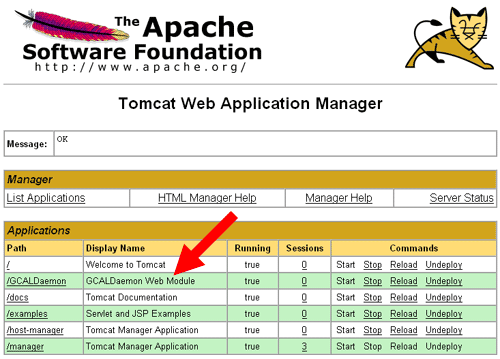
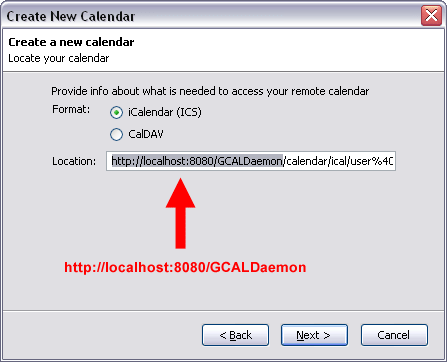

1) GCALDaemon supporting a Java Developer Kit such as found in Sun's JDK, version 1.5
or higher. This can be obtained for free from java.sun.com.
You can verify your existing Java version with the following console command:
java -version
java version "1.6.0"
Java(TM) SE Runtime Environment (build 1.6.0-b105)
Java HotSpot(TM) Client VM (build 1.6.0-b105, mixed mode, sharing)
2) Download the last 'GCALDaemon.war' from
.
3) Download the last Tomcat distribution from
.

4) Unzip the distribution.
5) Edit '<tomcat-root>/bin/setclasspath.bat' (or 'setclasspath.sh') and set the 'JAVA_HOME' variable.

6) Edit '<tomcat-root>/conf/tomcat-users.xml', and set the username/password properties of the Tomcat Manager
(e.g. 'manager' / 'manager' - it's not the safest way, but don't worry, you can change it later).

7) Launch Tomcat using '<tomcat-root>/bin/startup.bat' (or 'startup.sh').

8) Move on to 'http://localhost:8080'. Click on the 'Tomcat Manager',
then input 'manager' / 'manager' for user and password.

9) Click on 'Browse...' button. Select the 'GCALDaemon.war',
then click on the 'Deploy' button.

10) GCALDaemon installed - You can verify this by checking messages written to the '<tomcat-root>/logs/' directory.

11) Move on to 'https://www.google.com/accounts/' and
copy the iCal URL for your calendar's Private Address on the Calendar Settings page.

12) Launch Sunbird. Click the 'New Calendar...' menu on the Calendars page.

13) Select 'On the Network' option on 'Create New Calendar' dialog.

14) Select 'iCalendar' format, and put the iCal URL for your calendar's Private Address into 'Location' field.
Replace 'www.google.com' hostname to 'localhost:8080/GCALDaemon'!

15) Input the new calendar's name (e.g. 'Google Calendar'). Click 'Next' then 'Finish'.

16) Input the username and password for your Google Calendar when prompted.
It's obligatory at the first modification. Optionally check the
'Use Password Manager to remember this password' box. Items added (or modified/deleted)
to your Sunbird calendar will now automatically appear in your Google Calendar.

17) As to necessity you can disable a lot of needless HTTP transport messages
in '<tomcat-root>/common/classes/log4j.xml'.
For more information about Log4J and XML configuration files move on to
.
<log4j:configuration xmlns:log4j="http://jakarta.apache.org/log4j/">
...
<category name="org.apache.commons.httpclient">
<priority value="ERROR"/>
</category>
<category name="httpclient">
<priority value="ERROR"/>
</category>
<category name="net">
<priority value="ERROR"/>
</category>
...
</log4j:configuration>